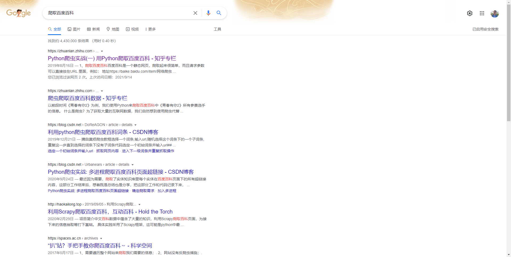

从百度百科爬取上市公司介绍
接下来我们实现一个稍微复杂些的爬虫，从百度百科爬取上市公司介绍内容。
原代码
本着避难就易的原则，我们首先来谷歌以下”爬取百度百科“，看看能不能找到有用的代码：

然后点开第一个链接看一看。这篇文章告诉我们只需要在“https://baike.baidu.com/item/”后面加上一个名词，就可以得到百度百科下该名词的词条，然后进行爬取，我们可以看一眼百度百科测试一下，确实是这样的。
这篇文章提供了这样一段代码来进行指定查询词语的爬取：
import urllib.request
import urllib.parse
from lxml import etree
def query(content):
# 请求地址
url = 'https://baike.baidu.com/item/' + urllib.parse.quote(content)
# 请求头部
headers = {
'User-Agent': 'Mozilla/5.0 (Windows NT 10.0; WOW64) AppleWebKit/537.36 (KHTML, like Gecko) Chrome/67.0.3396.99 Safari/537.36'
}
# 利用请求地址和请求头部构造请求对象
req = urllib.request.Request(url=url, headers=headers, method='GET')
# 发送请求，获得响应
response = urllib.request.urlopen(req)
# 读取响应，获得文本
text = response.read().decode('utf-8')
# 构造 _Element 对象
html = etree.HTML(text)
# 使用 xpath 匹配数据，得到匹配字符串列表
sen_list = html.xpath('//div[contains(@class,"lemma-summary") or contains(@class,"lemmaWgt-lemmaSummary")]//text()')
# 过滤数据，去掉空白
sen_list_after_filter = [item.strip('\n') for item in sen_list]
# 将字符串列表连成字符串并返回
return ''.join(sen_list_after_filter)
if __name__ == '__main__':
while (True):
content = input('查询词语：')
result = query(content)
print("查询结果：%s" % result)这段代码里面定义了main函数，其主要作用是在有多个Python文件时保证从这里开始执行，当然这里并用不到。
我们运行一下这段代码，发现它可以爬取到百度百科的前面几段话，可能不太很符合我们的需求，但是还属于可以抢救一下。我们先读一下代码试试。
原码重写与解读
首先重写一下代码，便于调试：
import urllib.request
import urllib.parse
from lxml import etree
content = '仙女'
# 请求地址
url = 'https://baike.baidu.com/item/' + urllib.parse.quote(content)
# 请求头部
headers = {
'User-Agent': 'Mozilla/5.0 (Windows NT 10.0; WOW64) AppleWebKit/537.36 (KHTML, like Gecko) Chrome/67.0.3396.99 Safari/537.36'
}
# 利用请求地址和请求头部构造请求对象
req = urllib.request.Request(url=url, headers=headers, method='GET')
# 发送请求，获得响应
response = urllib.request.urlopen(req)
# 读取响应，获得文本
text = response.read().decode('utf-8')
# 构造 _Element 对象
html = etree.HTML(text)
# 使用 xpath 匹配数据，得到匹配字符串列表
sen_list = html.xpath('//div[contains(@class,"lemma-summary") or contains(@class,"lemmaWgt-lemmaSummary")]//text()')
# 过滤数据，去掉空白
sen_list_after_filter = [item.strip('\n') for item in sen_list]
# 将字符串列表连成字符串并返回
print(''.join(sen_list_after_filter))跑一下，是可以跑通的。如果把”仙女“字段换为”平安银行股份有限公司“，是不是也能正确得到结果呢？请小仙女试一下啦。
这段代码定义了函数query()用于获得爬取结果，核心是发送请求，获得响应的这句：
# 发送请求，获得响应
response = urllib.request.urlopen(req)然后通过调试和百度、查阅文档、查看网页源码等，我们有以下认识：
- req需要根据请求地址和请求头部来构造。请求地址很好理解，请求头部主要是用来模拟浏览器访问的，有固定写法。这里我们可以看一下文档便知；
- urllib.parse.quote()方法是用于对汉字做特定处理，使其能出现在url链接中；
- 得到的text是包含了网页HTML代码在内的很长很长的一段字符串；
- html.xpath()方法实现了内容筛选功能，sen_list是筛选后得到的一个充满文本的list；
- 对sen_list做了去空白和拼接然后输出结果。
其中html.xpath()的筛选功能是采用了一种叫做XPath的语言，我们不用管，这不太重要，即使在网页上我们也能找到爬取其他文字内容的关键字：para
然后我们把代码里面的筛选规则照猫画虎，替换一下：
sen_list = html.xpath('//div[contains(@class,"lemma-summary") or contains(@class,"lemmaWgt-lemmaSummary") or contains(@class,"para")]//text()') 怎么样，是不是得到了我们想要的全文爬取的功能啦😙😙😙
我们重新复原一下代码，因为一个完整的query()函数是便于我们后面调用的：
import urllib.request
import urllib.parse
from lxml import etree
def query(content):
# 请求地址
url = 'https://baike.baidu.com/item/' + urllib.parse.quote(content)
# 请求头部
headers = {
'User-Agent': 'Mozilla/5.0 (Windows NT 10.0; WOW64) AppleWebKit/537.36 (KHTML, like Gecko) Chrome/67.0.3396.99 Safari/537.36'
}
# 利用请求地址和请求头部构造请求对象
req = urllib.request.Request(url=url, headers=headers, method='GET')
# 发送请求，获得响应
response = urllib.request.urlopen(req)
# 读取响应，获得文本
text = response.read().decode('utf-8')
# 构造 _Element 对象
html = etree.HTML(text)
# 使用 xpath 匹配数据，得到匹配字符串列表
sen_list = html.xpath('//div[contains(@class,"lemma-summary") or contains(@class,"lemmaWgt-lemmaSummary") or contains(@class,"para")]//text()')
# 过滤数据，去掉空白
sen_list_after_filter = [item.strip('\n') for item in sen_list]
# 将字符串列表连成字符串并返回
return ''.join(sen_list_after_filter)
content = '仙女'
result = query(content)
print("查询结果：%s" % result)这里注意一下，如果小仙女认为我们只需要爬取第一段即可，那就不用改那一句啦。
Python读取表格与文件保存
那么接下来我们怎么做呢？上一节我们已经获得了上市公司的基本信息，我们只需要按照公司名称作为关键字，去分别爬取就好了。这里首先涉及到一个问题：读取excel并获取一系列字符串类型的公司名。因为我们需要字符串类型的公司名去做拼接和检索。
因为前面Python总结与练习一节已经做过excel读取的练习，所以这里直接给出读取《2021年上市公司基本信息表》中的公司名称的代码，主要参考了这篇文章。
file = '2021年上市公司基本信息表.xlsx'
wb = xlrd.open_workbook(filename=file)#打开文件
sheet1 = wb.sheet_by_index(0)#通过索引获取表格
# print(sheet1.name,sheet1.nrows,sheet1.ncols)
for i in range(1, sheet1.nrows):
content = sheet1.row(i)[2].value
# print(content)现在我们已经得到了content，在循环中对content分别进行query()调用即可得到result，将result保存为我们想要的格式即可。
现在还有一个问题就是保存文本的问题，我们以txt为例子，简要说明一下怎样把字符串result保存为txt文本，主要参考这篇文章。
result = '我是平安银行'
fh = open('平安银行.txt', 'w', encoding='utf-8')
fh.write(result)
fh.close()试一下，是不是可以成功保存为txt啦。
至此我们已经打通了从我们的《2021年上市公司基本信息表》到爬取百度百科，再到保存到本地的所有环节，把这些环节拼起来就好啦。
按照公司名爬取百度百科
我们现在来把所有环节拼起来，总体思路如下：
当然还有一些细枝末节的问题，比如txt的名称需要字符串拼接，txt的位置需要自己确定然后拼接，异常监测等等，看下面的这段汇总代码即可：
import urllib.request
import urllib.parse
from lxml import etree
import xlrd
from datetime import date,datetime
def query(content):
# 请求地址
url = 'https://baike.baidu.com/item/' + urllib.parse.quote(content)
# 请求头部
headers = {
'User-Agent': 'Mozilla/5.0 (Windows NT 10.0; WOW64) AppleWebKit/537.36 (KHTML, like Gecko) Chrome/67.0.3396.99 Safari/537.36'
}
# 利用请求地址和请求头部构造请求对象
req = urllib.request.Request(url=url, headers=headers, method='GET')
# 发送请求，获得响应
response = urllib.request.urlopen(req)
# 读取响应，获得文本
text = response.read().decode('utf-8')
# 构造 _Element 对象
html = etree.HTML(text)
# 使用 xpath 匹配数据，得到匹配字符串列表
sen_list = html.xpath('//div[contains(@class,"lemma-summary") or contains(@class,"lemmaWgt-lemmaSummary") or contains(@class,"para")]//text()')
# 过滤数据，去掉空白
sen_list_after_filter = [item.strip('\n').replace(' ', '') for item in sen_list]
# 将字符串列表连成字符串并返回
return ''.join(sen_list_after_filter)
file = '2021年上市公司基本信息表.xlsx'
wb = xlrd.open_workbook(filename=file)# 打开表格文件
dir = 'D:\\爬取百度百科\\' # 这个目录需要自行创建并指定
errors = open('C:\\Users\\15617\\Desktop\\'+'异常信息_百度百科.txt', 'a', encoding='utf-8')
empty = open('C:\\Users\\15617\\Desktop\\'+'空信息_百度百科.txt', 'a', encoding='utf-8')
sheet1 = wb.sheet_by_index(0)# 通过索引获取表格
for i in range(1, sheet1.nrows):
print(i)
content = sheet1.row(i)[2].value
try:
result = query(content)
if len(result):
fh = open(dir+content+'.txt', 'w', encoding='utf-8')
fh.write(result)
fh.close()
else:
empty.write(content+'\n')
except:
errors.write(content+'\n')
errors.close()
empty.close()这段汇总代码里面我们还：
- 使用了try except作为异常检测，如果发现有未成功爬取的公司，就把公司名输出到异常信息.txt中，方便我们后面回溯；
- 还输出i作为进度提示；
- 将爬取结果为空的公司输出到空信息.txt中，方便后续回溯，当然我们可以保存为别的格式，完全取决于小仙女的需求和操作便利性；
- 使用.replace()替换掉爬取结果中的特殊字段。
最终我们发现还有100多个公司是百度百科里面没有的，没法去爬啦。我这里跑下来一共得到了4354个有效文件。
这一节就到这里啦，怎么样，是不是很简单呀❤❤❤